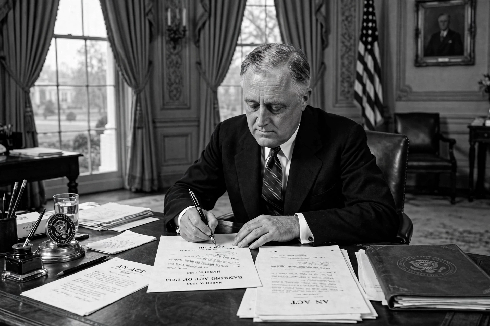

| First Hundred Days | |
 | |
| Period | 9 March – 16 June 1933 |
|---|---|
| President | Franklin D. Roosevelt |
| Session | Special session of the 73rd United States Congress |
| Outcome | 15 major laws enacted; foundation of the New Deal |
The First Hundred Days refers to the period from 9 March to 16 June 1933, when President Franklin D. Roosevelt pushed an unprecedented flurry of legislation through the United States Congress to combat the Great Depression, launching the New Deal. The phrase has since become a standard benchmark for judging the opening of a US presidency — and, by extension, other governments.
Roosevelt took office on 4 March 1933 with a quarter of the workforce unemployed and the banking system collapsing. He declared a national bank holiday and summoned Congress into special session. In his inaugural address he told Americans that "the only thing we have to fear is fear itself" and asked for broad executive power to wage war against the emergency.
Congress passed fifteen major bills in the Hundred Days, including:
Roosevelt signed every bill Congress sent him during the session. The Hundred Days also saw the end of Prohibition begin, with the legalisation of 3.2% beer.
Journalist Walter Lippmann and others popularised "the Hundred Days" as the model of presidential beginnings; every president since has been measured against it, even though the term originally echoes Napoleon's Hundred Days of 1815. Roosevelt's own later programmes — the Wagner Act (National Labor Relations Act) and the Fair Labor Standards Act — belonged to the later New Deal, but the template of rapid, experimental action was set in 1933.